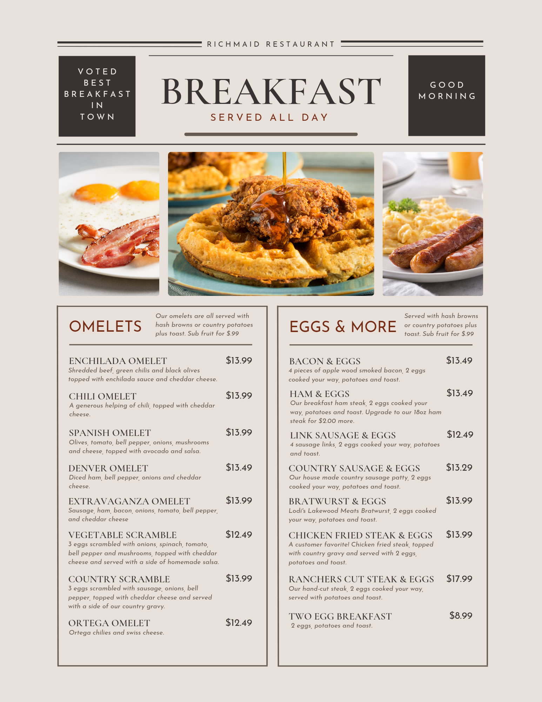

Thing I have built as new web developer:
Tic-Tac-Toe Game

You probably already know how to play Tic-Tac-Toe. It's a really simple game, right? That's what most people think. But if you really wrap your brain around it, you'll discover that Tic-Tac-Toe isn't quite as simple as you think!
Tic-Tac -Toe (along with a lot of other games) involves looking ahead and trying to figure out what the person playing against you might do next.
To beat the computer (or at least tie), you need to make use of a little bit of strategy. Strategy means figuring out what you need to do to win.
Part of your strategy is trying to figure out how to get three X in a row. The other part is trying to figure out how to stop the computer from getting three Os in a row. After you put an X in a square, you start looking ahead. Where's the best place for your next X You look at the empty squares and decide which ones are good choices—which ones might let you make three X in a row.
Basketball Game

basketball, game played between two teams of five players each on a rectangular court, usually indoors. Each team tries to score by tossing the ball through the opponent’s goal, an elevated horizontal hoop and net called a basket.
The only major sport strictly of U.S. origin, basketball was invented by James Naismith (1861–1939) on or about December 1, 1891, at the International Young Men’s Christian Association (YMCA) Training School (now Springfield College), Springfield, Massachusetts, where Naismith was an instructor in physical education.
For that first game of basketball in 1891, Naismith used as goals two half-bushel peach baskets, which gave the sport its name. The students were enthusiastic. After much running and shooting, William R. Chase made a midcourt shot—the only score in that historic contest. Word spread about the newly invented game, and numerous associations wrote Naismith for a copy of the rules, which were published in the January 15, 1892, issue of the Triangle, the YMCA Training School’s campus paper.
Restaurant menu
Creating a menu seems like a relatively simple thing to do. Just list down all the items your Chef can cook for your restaurant, and you’re good to go. Except, not! Menu designing is an art and takes a lot of effort and calculations to price those items right. Often, restaurant owners get so involved in pricing their menu, that they forget the aesthetics of it. A well-designed restaurant menu with good restaurant menu descriptions can up sell the dishes itself, and influence your customers to order more, while a poorly designed menu can hamper your business.
Create the menu descriptions in such a way that it leaves them salivating and ordering for more. An ideal restaurant menu description is a short one, explains what the dish is, and, ultimately, makes the customer want to order it. Avoid long, incomprehensible food descriptions that leave the customers puzzled about what the dish is. If customers don’t understand the restaurant menu description, they are most likely not to order that item. Hence, this makes it imperative that you avoid making these cardinal menu design mistakes.